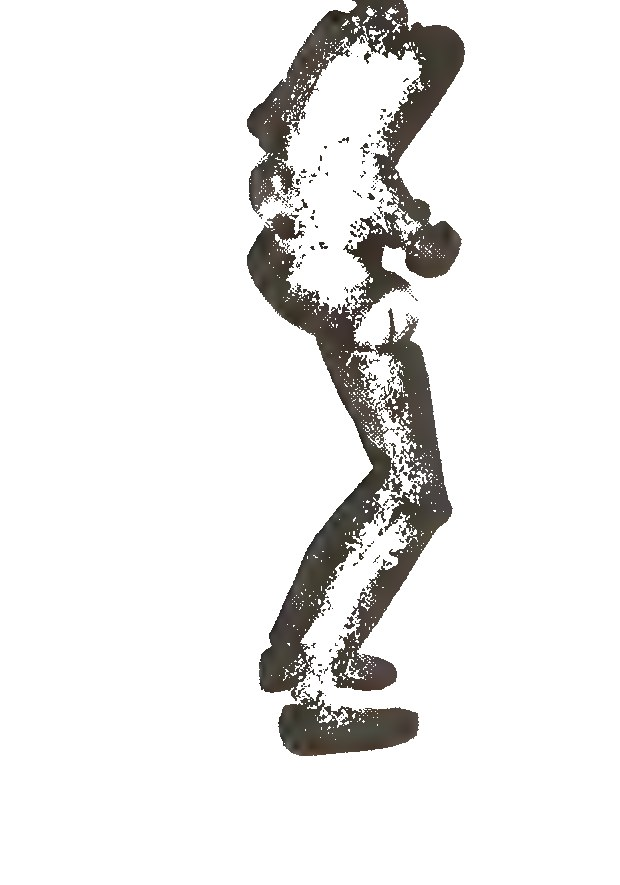
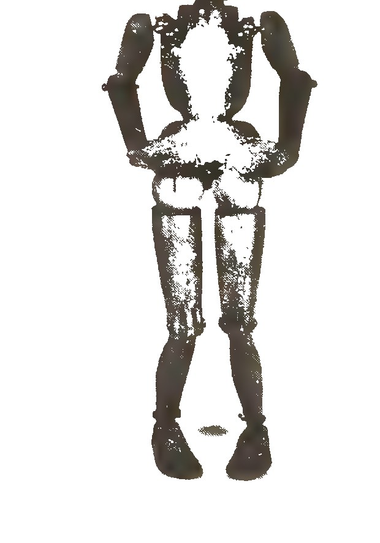

Thật ngạc nhiên là một phản xạ duy nhất của não dưới lại có thể là nguyên nhân của nhiều thay đổi cơ thể như thế — những thay đổi gắn liền với lão hóa. Điều này cũng mang tính khai sáng, vì nó giúp chúng ta vừa hiểu vừa vượt qua được huyền thoại về lão hóa.
“Với việc nuôi ba đứa con, chăm sóc ngôi nhà và chồng mình, thì đương nhiên là tôi có những vết chân chim ở bên mắt rồi” — một người vợ nói.
“Nếu bạn muốn biết cảm giác ấy như thế nào — lo liệu một ngôi nhà, một người vợ và nuôi ba đứa con — thì cứ nhìn những nếp nhăn trên trán tôi. Đó là điều mà sự lo âu sẽ làm cho bạn” — một người chồng nói. Cả hai vợ chồng đều làm chứng cho cùng một phản xạ cổ xưa ấy.
“Tôi bắt đầu có một cái gù nhỏ ở sau gáy, giống hệt bác tôi. Đó có phải là cái gù lưng của bà lão (dowager's hump) không? Và cái đầu tôi thì: nó luôn rủ về phía trước. Trông nó thật kinh khủng, như của một ông lão. Anh có làm được gì về chuyện đó không?”
Đó là một biểu hiện của cùng phản xạ não dưới ấy.
“Tôi thật sự mong anh có thể làm gì đó cho vai tôi. Vợ tôi bảo chúng bị trĩ xuống. Trước đây tôi có một cái ngực khá to, giờ thì gần như không còn thấy nữa, nó phẳng thế mất rồi.” Những hệ quả của phản ứng rút lui qua nhiều năm đã tạo ra điều đó.
“Anh biết không, tôi chưa đầy 60 tuổi mà đã đứng cúi người về phía trước rồi. Hôm nọ tôi thấy trong ô kính của một cửa hàng hình ảnh một ông lão cúi xuống như cần một cây gậy. Rồi tôi nhận ra đó là chính mình!” Điều ông thấy là một sự phản chiếu của phản xạ Đèn Đỏ.
“Vấn đề của tôi là tôi không còn thở được nữa. Trước đây tôi có thể leo lên các bậc thềm đến cửa trước nhà mà chẳng nghĩ ngợi gì. Giờ tôi phải dừng lại để lấy hơi. Chuyện gì đang xảy ra với tôi vậy? Phổi tôi bắt đầu teo lại rồi sao?” Một lần nữa, đây chính là phản xạ ấy, được gợi ra quá thường xuyên và quá quen thuộc đến mức trở thành một thói quen vô ý thức. Chỉ có hệ quả của nó là được nhận biết.
“Tôi đã hoạt động suốt đời, và trước đây tôi có thể đi bộ vượt qua bất cứ ai. Nhưng có điều gì đó đã xảy ra với đùi tôi: Chúng đau nhức suốt. Và đầu gối tôi cũng vậy. Chúng đau khi tôi ngậy dậy vào buổi sáng.” Đây cũng là những hệ quả của phản xạ rút lui.
Trong nhiều thập kỷ, các nhà sinh học thần kinh đã bị cuốn hút bởi phản xạ ở người này, vì nó xuất hiện trong toàn bộ vương quốc động vật. Đôi khi nó
được gọi là “phản ứng giật mình”; vào những dịp khác nó được gọi là “phản ứng thoát thân,” vì nó giúp con vật tránh né hoặc lảng tránh một mối đe dọa. Đó là một phản xạ nguyên thủy của sự sinh tồn. Hoạt động của nó trong hệ thần kinh trung ương thường được trung gian hóa bởi những sợi thần kinh “khổng lồ” đủ lớn để cho xung thần kinh truyền đi nhanh hơn. Đó là một “hành động vận động nhanh” được cài đặt sẵn trong mạch của ngay cả những sinh vật rất đơn giản, giúp chúng sống sót bằng cách rút lui nhanh chóng khỏi nguy hiểm.
Khi bạn chạm vào một con hải quỳ, vòng xúc tu nhỏ của nó co lại ngay, rút lui khỏi kích thích đe dọa. Một con giun đất thông thường thể hiện phản ứng rút lui ngay lập tức khi cơ thể nó bị chạm bằng một que thăm. Con ruồi phiền phức nhưng khôn khéo thì đợi cho bạn gần như chạm tới nó rồi mới đột ngột lùi đi, né cái vỗ ruồi của bạn. Ngưỡng nguy hiểm của nó rất cao. Cá đáp trả bằng những cú lao nhanh, và tôm hùm đất thì bằng một cú vẫy đuôi bất ngờ.

Hình 15a: Phản ứng rút lui — Nhìn từ bên

Hình 15b: Phản ứng rút lui — Nhìn từ trước
Tất cả các loài động vật có vú đã được nghiên cứu đều thể hiện phản ứng rút lui (xem Hình 15a và 15b). Ngay cả ở những động vật phức tạp này, phản xạ vẫn nhanh và hiệu quả. Và ở loài động vật có vú phức tạp nhất, con người, phản ứng rút lui nhanh đến kinh ngạc. Nếu một người phụ nữ đang đi trên phố nghe tiếng nổ bất ngờ của ống xả ô tô, thì điều xảy ra là: Trong vòng 14 mili-giây, các cơ ở hàm cô bắt đầu co lại; ngay sau đó, khoảng 20 mili-giây sau, các cơ ở mắt và lông mày cô co lại. Nhưng, trước khi mắt cô kịp nhắm chặt,
các cơ ở vai và cổ cô (cơ thang) đã nhận được một xung thần kinh ở 25 mili-giây để co lại, nâng vai cô lên và kéo đầu cô về phía trước. Ở 60 mili-giây, khuỷu tay cô gập lại, rồi bàn tay cô bắt đầu xoay lòng bàn tay xuống dưới. Những xung thần kinh đi xuống này tiếp tục bằng cách co cơ bụng, kéo thân mình cô về phía trước, đồng thời kéo lồng ngực xuống và làm ngưng hơi thở của cô. Và, ngay sau đó, đầu gối cô gập lại và hướng vào trong, trong khi mắt cá chân lật bàn chân cô vào trong. Các cơ ở vùng bẹn thắt lại, và các ngón chân nhấc lên. Đây là sự tóm tắt của phản xạ Đèn Đỏ — sự rút lui của cơ thể khỏi nguy hiểm. Cơ thể được gập lại và cụm xuống, gần như sẵn sàng ngã và cuộn tròn thành tư thế bào thai.
Dòng thác xung thần kinh này bắt đầu ở mặt, rồi đi xuống cổ, rồi đến cánh tay và thân mình, và cuối cùng là đến chân và ngón chân. Tại sao lại có trình tự từ đầu trở xuống này? Vì xung phát ra từ thân não ở tầng thấp và đến các cơ vùng đầu sớm nhất, rồi mất thời gian để đi dọc theo các đường thần kinh xuống các bộ phận thấp hơn của cơ thể.
Phản ứng rút lui này, được con người chia sẻ với phần còn lại của vương quốc động vật, phát ra từ những vùng nguyên thủy của não sau — chính xác hơn, từ đường lưới-tủy bắt nguồn từ sự tạo lưới cầu não và hành não bụng. Như vậy, cơ chế của phản xạ này nằm sâu bên dưới sự kiểm soát của não trước, nơi khởi phát các hành động có ý thức, tự nguyện. Phản xạ rút lui không chỉ nguyên thủy hơn các hành động tự nguyện của ta, mà còn nhanh hơn nhiều. Nó xảy ra trước khi ta có thể nhận biết hay ức chế nó có ý thức. Nó là người bảo vệ nguyên thủy của ta, với phương châm là “Rút lui ngay, rồi mới suy nghĩ về chuyện đó sau.” Sinh tồn đòi hỏi một phản ứng tức thì. Ta không có sự xa xỉ được suy ngẫm dài dòng về mức độ nguy hiểm thực sự của mối đe dọa bất ngờ ấy.
Khi phản xạ Đèn Đỏ nhanh chóng chạy từ đầu xuống chân, nó gây ra sự co cơ ở chính những vùng tôi đã nhắc đến ở đầu chương: những vết chân chim và nếp nhăn trên trán, cái gù lưng của bà lão và cái đầu nhô ra trước, vai trĩ xuống và ngực phẳng, thân mình cúi gằm, hơi thở ngắn ngủm, và đầu gối đau nhức. Vì tất cả những điều này đều là những thay đổi cơ thể gắn với lão hóa, nên thật ngạc nhiên là chúng có thể do một phản xạ não dưới duy nhất gây ra.
Bằng cách nhận ra những hệ quả đã biết và được nghiên cứu kỹ của phản ứng rút lui, ta có thể đồng thời hiểu rõ hai vấn đề cực kỳ quan trọng: (1) những phản ứng cụ thể mà hệ thống thần kinh–cơ của ta tạo ra trước các điều kiện stress; và (2) nguyên nhân thực sự của những thay đổi cơ thể mà theo truyền thống và sai lầm người ta vẫn luôn đổ lỗi cho một căn bệnh hư cấu gọi là “lão hóa.”
Phản xạ Đèn Đỏ là một phản ứng trước những sự kiện gây đau khổ. Đó là một phản ứng bảo vệ trước những sự kiện tiêu cực đe dọa ta, từ những lo ngại mơ hồ đến những nỗi lo âu mòn mỏi, đến những nguy hiểm lộ liễu. Phản ứng rút lui là một phản ứng thần kinh–cơ căn bản trước stress, cũng như hội chứng thích nghi chung của Selye là một phản ứng tuyến căn bản.
Thực ra, nó là một dạng cụ thể của phản ứng ấy: nghĩa là, một phản ứng bảo vệ trước những yếu tố gây stress tiêu cực.
Ví dụ, khi những nỗi lo kích hoạt phản ứng này, mắt và trán co lại, làm nhăn da. Nếu ta lo lắng đủ lâu, làn da ta sẽ nhăn vĩnh viễn. Khi những nỗi lo âu khiến các cơ ở cổ gập lại, khuôn mặt được đẩy ra phía trước trong không gian, khiến các cơ ở đáy cổ (quanh đốt sống cổ thứ bảy) phải co mạnh để nâng đỡ cái gánh nặng treo về phía trước ấy. Càng xảy ra thường xuyên, các cơ và mô mỡ quanh đốt sống cổ thứ bảy càng phát triển to và dày hơn, từ đó tạo ra cái gọi là gù lưng của bà lão.
Vai cũng vậy, mặt sau của vai được nối với cổ bởi chính các cơ thang. Khi những sự kiện gây đau khổ khiến ta lo âu, chúng gây ra phản xạ nâng và làm tròn xương bả vai về phía trước. Người ta không thể lo âu mà không co vai. Không thể nào nói “Oi Veh!” mà không nhấc vai lên. Đó là lý do những người lo âu mạn tính thường có vai và cổ đau nhức mạn tính. Nếu những nỗi lo nghiêm trọng ập đến một người từ sớm trong cuộc đời, thì vai cúi gằm sẽ xuất hiện sớm. Mức độ vai trĩ xuống và cổ co lại của một đứa trẻ là thước đo sự lo âu thời thơ ấu. Trong những năm thiếu niên đầy đau khổ, tư thế này rất phổ biến.
Như vậy, không phải “tuổi tác” gây ra những thay đổi cơ thể này — mà là sự đau khổ. Nó càng nhiều và kéo dài càng lâu, thì phản xạ Đèn Đỏ càng bộc lộ những hệ quả lâu dài. Không phải “tuổi tác” gây ra tư thế cúi gằm và hơi thở nông; mà là sự tích lũy phản ứng trước stress tiêu cực. Việc có gia đình, chăm sóc con cái, giữ một công việc, trả các hóa đơn và giải quyết những vấn đề hằng ngày của cuộc sống — tất cả đều là những nguyên nhân khiến ta trông già đi và cúi gằm, không leo lên được bậc thềm mà không hụt hơi và nghe thấy tim mình đập nhanh hơn.
Tư thế cúi gằm và hơi thở nông đi cùng nhau. Cả hai đều do sự co của cơ bụng gây ra. Cơ thẳng bụng là một bao cơ dài, khỏe, kéo dài từ điểm bám thấp ở xương mu và đường bẹn, vượt lên suốt phía trước ngực tận đến đường núm vú. Khi nó co, phần trên của lồng ngực bị kéo về phía trước và xuống dưới, còn xương mu thì bị kéo về phía trước và lên trên. Thân mình vì thế bị kéo vào đường cong gập của tư thế bào thai.
Sự co cơ bụng không chỉ ép lồng ngực xuống, mà còn ép toàn bộ nội dung của ổ bụng xuống, tạo áp lực lên các nội tạng. Điều này có nghĩa là khi cơ hoành nằm giữa lồng ngực và ổ bụng co lại trong lúc hít vào, và bắt đầu đi xuống về phía ổ bụng, thì hơi thở bị ngưng lại đột ngột. Chuyển động đi xuống như bơm của cơ hoành là cần thiết để tạo một áp suất âm trong khoang ngực nhằm hút không khí vào. Nhưng nếu các nội tạng bị chèn ép cản trở chuyển động đi xuống này, thì không có áp suất âm nào được tạo ra, và hơi thở trở nên không đầy đủ.
Khi ta bắt đầu hiểu cách các sự co cơ của phản xạ Đèn Đỏ gây ra những rối loạn chức năng của cơ thể, ta có được một góc nhìn khác về một số
“bệnh tật thường gặp của tuổi già.” Không chỉ sự co bụng này gây thở nông, nó còn tạo ra những vấn đề khác. Áp lực lên các nội tạng ảnh hưởng đến mọi chức năng nội tạng. Ví dụ, khi áp lực chất lỏng trong bàng quang tăng, niệu đạo tự động co lại, cho ta cảm giác cấp bách cần đi tiểu. Nhưng khi cơ bụng bị co cứng, nó ép vào bàng quang, làm tăng áp lực bên trong và tạo ra cảm giác giả tạo là bàng quang đã đầy. “Tiểu tiện nhiều lần” là một than phiền phổ biến ở người cao tuổi. Nó thường là hệ quả của một phản xạ Đèn Đỏ đã thành thói quen. Sự co bụng ấy cũng ảnh hưởng đến tiêu hóa và bài tiết. Táo bón và tình trạng cơ dạ dày co cứng mạn tính thường đi cùng nhau.
Đây là những hệ quả thứ phát của phản ứng rút lui. Nếu người ta không hiểu làm sao chúng có thể gây ra những rối loạn cơ bản của hệ hô hấp và tiêu hóa, thì rất dễ mắc sai lầm rằng đây là những “vấn đề y khoa” — chỉ ra sự hỏng hóc và thoái hóa của các cơ quan nội tạng. Không nhất thiết phải như vậy. Đó là lý do những rối loạn này có thể biến mất khi một người học được cách kiểm soát phản xạ thần kinh–cơ đang tạo ra chúng.
Đau nhức chân và đầu gối là đặc điểm điển hình của người cao tuổi. Quan sát kỹ cho thấy những người già này đã bắt đầu đi với đầu gối hơi gập, làm mất đi chức năng chịu lực của một đầu gối thẳng. Nếu các cơ đùi liên tục được dùng để chống đỡ trọng lượng trong lúc thức, chúng sẽ trở nên mệt mỏi và đau nhức mạn tính. Thêm vào đó, những vùng dưới xương bánh chè và phía sau khớp gối, nơi các gân đùi vượt qua đầu gối để bám vào chân dưới, sẽ trở nên đau và đôi khi viêm. Phẫu thuật nội soi khớp không phải là một giải pháp thích đáng. Giải pháp nằm ở việc vượt qua phản xạ Đèn Đỏ, để đi lại một lần nữa với sự chống đỡ đầy đủ của một chân thẳng đứng.
Còn nhiều rối loạn khác phát sinh khi cơ thể thường xuyên bị co trong phản ứng rút lui. Những rối loạn này không phải là những căn bệnh y khoa điển hình mà là một cái gì đó khác: cái mà Hans Selye gọi là “những căn bệnh của sự thích nghi.” Tôi đồng ý với Selye. Những căn bệnh ấy sẽ không xảy ra nếu một người có khả năng thích nghi với những stress đó bằng cách sử dụng thông minh các Bài tập Somatic. Hiệu quả là các cơ của ta trở nên thoát khỏi sự kiểm soát của các phản xạ não dưới và được trả lại dưới sự kiểm soát tự nguyện của ta.
Sự thành thói quen là hình thức học tập đơn giản nhất. Nó xảy ra qua sự lặp đi lặp lại liên tục của một phản ứng. Khi cùng một phản ứng cơ thể xảy ra đi đi lại lại, khuôn mẫu của nó dần dần được “học” ở mức vô ý thức. Sự thành thói quen là một hành động thích nghi chậm rãi, không ngừng, ăn sâu vào các khuôn mẫu chức năng của hệ thần kinh trung ương. Khi bạn thấy ai đó biểu hiện bất kỳ hay tất cả những biến dạng tư thế của phản ứng rút lui, thì bạn đang nhìn vào một tư thế đã được khắc ghi vào hệ thần kinh–cơ qua sự thành thói quen. Một người đứng trong tư thế cúi gằm của tuổi già
đã học được một “thói quen” làm như vậy. Anh ta hay cô ấy không hề “hỏng hóc,” cũng không thoái hóa về cấu trúc cơ thể. Thay vào đó, người đó đã trở nên thích nghi sai trong các thói quen thần kinh–cơ của mình. Điều cực kỳ quan trọng là phải hiểu điều này, vì nếu cấu trúc cơ thể của người đó thực sự đã hỏng hóc cuối cùng, thì ta chẳng có thể làm được nhiều hơn là đưa cho người đó một cây gậy hay một dạng nẹp nào đó. Nhưng nếu tư thế cúi gằm của người đó — cùng với tất cả những bệnh tật đi kèm với nó — là một thói quen xấu học được qua sự lặp lại do tình cờ, thì nó có thể được sửa chữa. Sự kiểm soát cơ bắp tự nguyện, từng có được nhưng tạm thời bị lãng quên hoàn toàn, có thể được học lại.
Đã có một lượng nghiên cứu đáng kể về sự thành thói quen của động vật có vú đối với phản ứng rút lui. Vì hệ thần kinh trung ương của mọi động vật có vú, kể cả con người, đều giống nhau, nên những nghiên cứu này rất mang tính gợi mở. Kết quả cho thấy chính xác cách phản xạ Đèn Đỏ khắc dấu ấn của nó lên tư thế con người.
Với tư cách là một nhóm, động vật có vú rất khác với các động vật khác ở cách phản xạ giật mình của chúng hoạt động. Ở động vật bậc thấp, phản xạ này là tất cả hoặc không có gì — nó không có các mức độ. Ở người và các động vật có vú khác, tuy nhiên, phản xạ giật mình có các mức phản ứng từ mức thấp cho đến mức rất cao. Biên độ phân cấp này của phản ứng có thể được nghiên cứu và hiệu chỉnh chính xác bằng cách đo mức độ co cơ xảy ra trong lúc giật mình. Chúng phụ thuộc vào một số yếu tố, tất cả đều liên quan đến con người. Trước hết, mức độ phản ứng phụ thuộc vào các tầng khác của não nằm phía trên thân não và có thể điều chỉnh các phản ứng ban đầu của nó. Một ảnh hưởng lớn đến phản xạ giật mình là kỳ vọng. Vì kỳ vọng là một yếu tố quan trọng đến thế, tôi dành hẳn một chương cho nó ở phần sau. Kỳ vọng có thể làm dịu hoặc làm tăng phản ứng rút lui. Ví dụ, nếu động vật trong phòng thí nghiệm bị cho sợ rằng một điều gì đó có hại có thể xảy ra, thì phản ứng giật mình của chúng khi điều đó xảy ra sẽ cao hơn hẳn so với bình thường khi chúng không có nỗi sợ ấy.
Hiện tượng này được mọi người thừa nhận rộng rãi. Khi trẻ em được kể một câu chuyện ma, và sự hồi hộp dần dần dâng lên, rồi có người đi đến phía sau và hét lên “Boo!” — chúng có thể nhảy dựng cả lên khỏi giày. Mọi đạo diễn sân khấu và điện ảnh đều biết rằng tạo ra một cảm giác kỳ vọng hồi hộp là cách để làm khán giả giật mình mạnh nhất. Sau khi được dàn dựng đủ, kích thích được đưa vào đột ngột, và các cơ của khán giả co lại. Mọi người, vì phản xạ rút lui đã co bụng lại, đẩy không khí ra, bỗng thốt lên — “Ối!”
Trái ngược với phản ứng giật mình ở mức cao này, con người cũng có thể trải qua cùng phản ứng ấy ở mức thấp — thấp đến mức phản ứng giật mình chỉ có thể được phát hiện bằng các điện cực nhạy đo hoạt động điện của sự co cơ (điện cơ đồ, EMG). Trong một nghiên cứu thú vị được báo cáo từ Canada, người ta thấy rằng độ căng EMG tăng lên khi một người đang làm một công việc thử thách nào đó có kèm nỗi sợ thất bại. Khi công việc hoàn tất, độ căng EMG trở lại mức bình thường. Trong một thí nghiệm, độ căng EMG
được ghi từ các cơ ở trán, vốn rất nhạy với phản xạ Đèn Đỏ. Đồng thời, các đối tượng nghe một câu chuyện trinh thám hồi hộp. Khi câu chuyện tiếp diễn, độ căng cơ cứ tăng lên, làm rõ cho các nhà nghiên cứu rằng cảm giác hồi hộp gắn trực tiếp với cảm giác căng cơ. Khi câu chuyện đến cao trào và tình huống nguy hiểm được giải tỏa, sự căng đã tích lũy dần ấy tan biến đột ngột, trở về mức ban đầu.
Nhưng có những ngoại lệ quan trọng. Khi câu chuyện bị ngắt giữa chừng, sự căng cơ tích lũy vẫn còn lại, ngay cả nhiều giờ sau. Các nhà nghiên cứu Canada phát hiện hiện tượng này là một đặc điểm chung của con người: Sự căng tích lũy trong bất kỳ công việc nào của con người có kèm nỗi sợ thất bại sẽ không giảm khi công việc hoàn tất, nếu không có cảm giác đã hoàn tất. Khái niệm này có thể rất tinh tế. Nếu, ở cuối một công việc, các đối tượng thí nghiệm được người thí nghiệm khen ngợi về cách họ làm, thì độ căng cơ của họ giảm xuống. Nhưng nếu họ bị phê bình, độ căng cơ vẫn còn. Đó được gọi là “căng dư.”
Theo kết quả nghiên cứu từ Canada, rõ ràng là hệ thần kinh–cơ của con người có khả năng thích nghi với một mức căng cao hơn ở những cơ này, được kích hoạt bởi phản ứng rút lui. Hiển nhiên là, nếu sự hồi hộp và sợ hãi đã có sẵn, thì phản ứng giật mình dễ được kích hoạt hơn. Trong một thí nghiệm của Canada, những bệnh nhân lo âu cao độ được so sánh với người bình thường về phản ứng giật mình trước một tiếng ồn lớn đột ngột. Ngay cả trước thí nghiệm, điện cơ đồ cho thấy các cơ của bệnh nhân lo âu co cứng hơn so với nhóm đối chứng bình tĩnh hơn. Khi tiếng động giật mình được tạo ra, sự khác biệt giữa hai nhóm đối tượng không nằm nhiều ở phản ứng ngay lập tức. Nó trở nên rõ ràng ở những gì xảy ra sau đó. Các cơ của người bình thường trở về trạng thái ban đầu trong vòng nửa giây sau tiếng động bất ngờ đầu tiên. Độ căng cơ của người lo âu không chỉ tiếp tục cao mà còn tiếp tục tăng trong suốt cuộc thí nghiệm.
Thật không may, sống trong một “xã hội tiên tiến” chính là sống trong một xã hội đầy rẫy đau khổ. Lo âu chính là đơn vị tiền tệ trao đổi trong một xã hội công nghiệp. Ai cũng sống với những câu chuyện hồi hộp không được kết thúc. Ai cũng sống với những nỗi sợ được vượt qua rồi lại được thay thế bằng những nỗi sợ mới. Ai cũng có lo âu: lo âu về cuộc đời mình, về gia đình mình, về an toàn tài chính của mình, về chỗ đứng của mình trong cộng đồng, về sự an toàn của ngôi nhà mình, về sự an toàn của chính mình trên đường phố, về sự an toàn của đất nước, về sự an toàn của giống loài người. Và công việc của ta, và khách hàng của ta, và các ngân hàng, và các công ty cho vay, và Sở Thuế Vụ, và các tờ báo, và các chương trình tin tức truyền hình — tất cả đều tiếp thêm lo âu, để nó tích lũy trong cuộc đời ta, lớp này chồng lớp khác, tạo ra những mức căng cơ thói quen ngày càng tăng ở hàm, mắt, lông mày, cổ, vai, cánh tay, ngực, bụng và chân ta.
Sự co bụng ấy cũng tạo ra hai vấn đề khác, nằm ở mức trung gian trên một dải liên tục từ những vấn đề tâm lý truyền thống đến những vấn đề sinh lý: cụ thể là rối loạn cương dương và bệnh trĩ. Sự co mạn tính,
kéo thành ngực xuống về phía bẹn và xương mu, không dừng lại ở đó, mà còn căng tất cả các cơ nằm ở đáy khung chậu giữa xương mu và xương cụt, tức là cái dây đai cơ gọi là đáy chậu hay “vùng kín.” Phản xạ Đèn Đỏ gây co các cơ đáy chậu thông qua sự phối hợp hiệp đồng. Sự co cũng xảy ra do áp lực tăng lên trong ổ bụng, khiến các cơ thắt của niệu đạo và hậu môn co theo phản xạ. Sự thắt chặt mạn tính quanh các mạch máu dẫn đến dương vật và âm vật ngăn cản dòng máu chảy đầy đủ và sự dẫn truyền thần kinh đầy đủ, từ đó ngăn cản sự cương cứng.
Rối loạn cương dương phổ biến ở những người bị co mạn tính ở vùng bụng–đáy chậu. Và chính những người ấy, như có thể đoán trước, là những người thở nông và dễ có cảm giác lo âu. Vấn đề có vẻ là một vấn đề tâm lý truyền thống, nhưng không phải. Nó thường là một vấn đề cơ mang tính phản xạ, trong đó sự kiểm soát đã bị mất. Chứng quên cảm giác–vận động (SMA) thường nền tảng cho chứng rối loạn cương dương mạn tính, và nó thường thấy ở người cao tuổi. Nhưng đó là một thói quen, không phải là sự thoái hóa của “tuổi già.” Và thói quen thì có thể được phá bỏ.
Vì sự co bụng–đáy chậu mạn tính khiến hậu môn co lại, sự căng liên tục của nó không cho phép nó thư giãn trong lúc đại tiện. Điều này tạo ra áp lực không chịu nổi ở cơ thắt hậu môn, làm tổn thương các mạch máu và gây bệnh trĩ. Lời khuyên y khoa là không “rặn khi đi cầu” thì có liên quan nhưng không đặc biệt giúp ích, vì không thể đại tiện mà không tạo áp lực nội bụng lớn hơn. Giải pháp thì rõ ràng: giải tỏa sự co ở hậu môn/đáy chậu, mà thực chất có nghĩa là giải tỏa phản xạ Đèn Đỏ. Người ta không thể chỉ giải tỏa một phần của phản xạ; người ta phải giải tỏa toàn bộ. Cắt, kéo giãn, hay điều trị bằng hóa chất ở hậu môn sẽ không giải quyết được vấn đề, vì vấn đề mang tính chức năng, không phải cấu trúc. Sự co hậu môn không phải là nguyên nhân cụ thể gây bệnh trĩ; đúng hơn, nó là hệ quả cụ thể của phản xạ Đèn Đỏ.
Việc thoát khỏi sự kiểm soát của phản xạ Đèn Đỏ không chỉ giải tỏa sự co hậu môn mà còn tăng cường khả năng cương cứng, làm sâu hơi thở, nâng thành ngực lên, tăng cường chức năng tim, và nhiều điều khác nữa.
Như đã lưu ý ở phần trước, sự chú ý dành cho những hệ quả của stress là rất lớn, nhưng nó đã không tập trung đúng vào vai trò của hệ thống thần kinh–cơ. Phản ứng rút lui là một phản ứng cơ căn bản trước stress tiêu cực, và một đặc điểm nền tảng của phản ứng này là sự ép nhẹ hơi thở. Bệnh tim mạch là một vấn đề sức khỏe hàng đầu trong xã hội đương đại. Vì thế thật đặc biệt là, trong các nghiên cứu về stress và chức năng tim, gần như không có sự chú ý nào dành cho hơi thở. Hơi thở được coi là không quan trọng hoặc chỉ là một biến số nhỏ trong những nghiên cứu này. Điều này thật đáng thất vọng sâu sắc, vì, theo một nghĩa nào đó, tim và phổi là cùng một cơ quan.
Máu tĩnh mạch vào các buồng bên phải của tim chảy trực tiếp qua các mô lọc và oxy hóa của phổi trước khi vào các buồng bên trái của tim. Phía bên phải của tim được nối với phía bên trái qua các đường đi của nó qua các mạch phổi. Những ảnh hưởng của hô hấp đến chức năng tim thì rõ ràng: Người ta thậm chí không thể ho, thở dài, hụt hơi, hay nín thở mà không gây ra một sự thay đổi ngay lập tức ở hoạt động mạch vành. Nhưng những ảnh hưởng này đã bị bỏ qua trong nghiên cứu khoa học. Nếu ta tìm một lý do cho điều này, trước hết ta có thể nhìn vào sự thiếu hiểu biết về mối quan hệ giữa stress và các phản ứng thần kinh–cơ trong giới nghiên cứu khoa học. Nếu Selye và những nhà nghiên cứu gần hơn đã biết về điều đó, thì đã có nhiều sự chú ý hơn dành cho nó sau này, đương nhiên vậy.
Những người không nằm dưới ảnh hưởng của phản xạ Đèn Đỏ có cơ bụng tương đối không bị ức chế. Họ có khả năng thở bằng cơ hoành, với bụng phình ra về phía trước và hai bên trong lúc hít vào. Kiểu thở sâu này có những ảnh hưởng sau đến chức năng tim:
Số 5 là hệ quả được thừa nhận rộng rãi nhất của hô hấp đối với chức năng tim mạch. Chứng loạn nhịp xoang hô hấp đề cập đến cách mà nhịp tim thay đổi theo pha của hơi thở: Nhịp tim tăng lên trong pha hít vào, rồi giảm xuống trong pha thở ra. Sự luân phiên này là một dấu hiệu cho thấy nhánh phó giao cảm của hệ thần kinh tự chủ chiếm ưu thế hơn nhánh giao cảm bị căng thẳng, nhánh điều khiển phản ứng chiến hay chạy. Nhịp thở gắn với nhịp điệu lên xuống này nằm trong khoảng sáu chu kỳ thở mỗi phút.
Năm hệ quả liệt kê ở trên đặc trưng cho những chức năng tim mạch không bị stress, thường chiếm ưu thế trong lúc thở cơ hoành không bị ức chế. Chứng loạn nhịp xoang hô hấp, với áp lực dâng lên rồi xuống và tốc độ dòng chảy thay đổi, có tác dụng xoa bóp và đánh bóng các thành mạch, được làm mượt bởi áp lực đập nhịp. Nhờ thế, các ống mạch có xu hướng giữ được sự dẻo dai.
Sự hiện diện của chứng loạn nhịp xoang hô hấp là một dấu hiệu của sức khỏe mạch vành; sự vắng mặt của nó là bằng chứng lâm sàng cho khả năng cao hơn bị bệnh mạch vành. Nó
được biết là vắng mặt khi bị bệnh; hơn nữa, ta không nên ngạc nhiên khi khám phá ra rằng mối liên hệ lành mạnh này giữa hơi thở và chức năng tim thường suy giảm theo tuổi tác càng tăng.
Điều gì thay thế nó? Một nhịp tim ổn định hơn, không thay đổi. Và điều gì khác xảy ra? Nhịp thở nhanh hơn. Và trạng thái tâm lý–sinh lý nào liên quan trực tiếp đến sự thay đổi không lành mạnh này? Chính là stress và hơi thở nông xảy ra khi cơ bụng căng lên cùng với phản ứng rút lui. Khi phản ứng này lặp đi lặp lại và những hệ quả đã thành thói quen của nó tích lũy trong suốt quá trình lão hóa, hơi thở trở nên nông hơn và nhanh hơn. Đây được gọi là tăng thông khí.
Một nghiên cứu đã được tiến hành với 153 bệnh nhân đau tim ở khoa chăm sóc mạch vành của một bệnh viện ở Minneapolis–St. Paul. Những bệnh nhân này được khám để xác định xem họ là người thở bằng cơ hoành bụng hay người thở bằng ngực, với cơ bụng căng cứng ép họ vào kiểu thở ngực gắng sức đặc trưng của người thở nông. Kết quả của cuộc khảo sát cực kỳ rõ ràng: Mỗi một trong số 153 bệnh nhân được khám đều là người thở bằng ngực!
Tăng thông khí là một kiểu hoạt động hô hấp đặc trưng bởi sự đáp ứng thông khí tăng lên. Đó là một tình trạng đi kèm với tỷ lệ đau ngực, hồi hộp đập nhịp và sự hẹp động mạch của thiếu máu cục bộ tăng lên. Nó mô tả một đặc điểm hành vi Loại A thấy ở những người có nguy cơ cao mắc bệnh tim mạch vành. Nó cũng có vẻ liên quan trực tiếp với tăng huyết áp “nguyên phát,” tức là tăng huyết áp không rõ nguyên nhân. Trong số bệnh nhân được chẩn đoán lâm sàng là tăng huyết áp, từ 80 đến 95 phần trăm không có nguyên nhân nào được biết đến cho căn bệnh của họ — chẳng hạn như rối loạn chức năng thận.
Tuy nhiên, với những bằng chứng hiện có, ta có thể suy luận rằng quả thực có một nguyên nhân, dù là ẩn giấu, của tăng thông khí — một nguyên nhân chưa từng được đặc biệt chú ý hay điều tra: phản xạ Đèn Đỏ, sự kích hoạt của nó mang tính đặc hữu trong các xã hội công nghiệp, và sự thành thói quen của nó gây ra kiểu thở ngực nông của tăng thông khí. Tăng thông khí có những hệ quả đã biết sau đây đối với tim:
Hai nhà nghiên cứu y học đã khám phá những vấn đề này một cách thấu đáo nhất là Defares và Grossman. Bản tóm tắt của họ về các tài liệu khoa học chạm đến chủ đề then chốt này kết thúc bằng nhận định sau:
Phân tích của chúng tôi gợi ý một số khả năng thú vị cho các chiến lược can thiệp nhằm giảm nguy cơ ở những cá nhân Loại A. Một liệu pháp thở hướng tới làm chậm kiểu thở và tăng độ sâu của hơi thở có thể chứng tỏ là một phương pháp điều trị hiệu quả… …Có thể thay đổi kiểu thở một cách khá ổn định. Những liệu pháp như vậy có thể đồng thời giảm cả nguy cơ tâm lý lẫn nguy cơ mạch vành.”
Những Bài tập Somatic được thiết kế để đối kháng với những hệ quả của phản xạ Đèn Đỏ chính là “những liệu pháp ấy.” Chúng cho phép ta nhớ lại cảm giác không lo âu là như thế nào, và thở lại một lần nữa như cách con người khỏe mạnh vốn được tạo ra để thở.